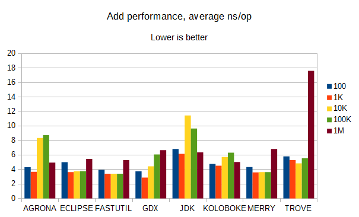
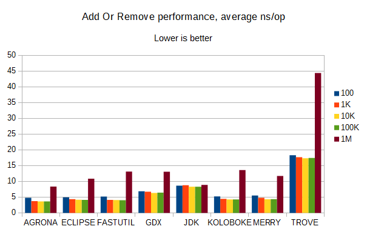
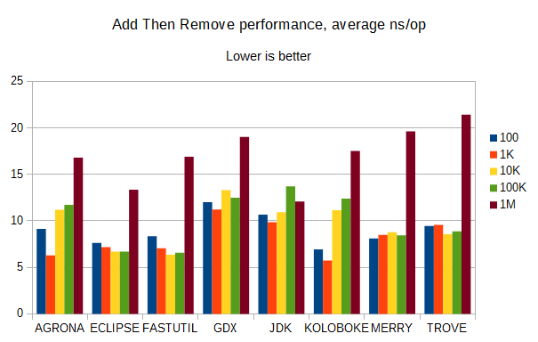
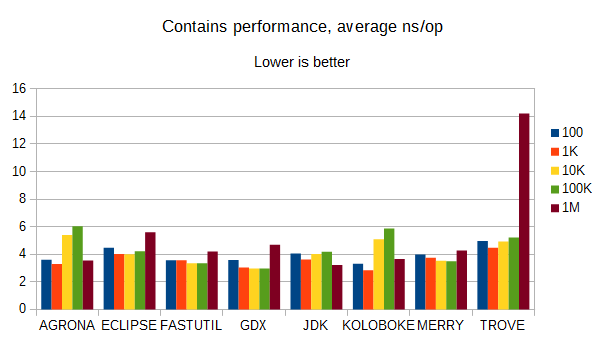
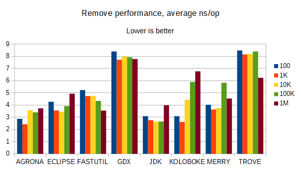
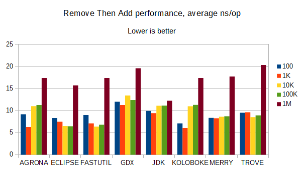

Here, we're comparing the performance of several collections libraries, including libGDX, on various operations on sets of String.
Add:
Add Or Remove:
Add Then Remove:
Contains:
Remove:
Remove Then Add:
The main point to note is that libGDX's ObjectSet performs very well, except when it has to remove an item. Then, it's consistently at or near the worst performance of any of these collections libraries.
In most other categories, everything except Trove performs well, and even Trove has a smaller gap between its average and worst-case times than the others (it seems to have considerably better worst-case performance than the others, which isn't shown here).
I'm pretty sure the version of Koloboke used isn't the latest, but the latest had some issues with needing a non-Maven-Central repo to get a closed-source annotation processor (these were suspicious, but may have been resolved). It seems to perform very competitively.
Merry seems to perform fairly well considering how small the codebase is (it has fewer methods than libGDX's ObjectSet). Merry's ObjectSet is API-compatible with libGDX's ObjectSet, and it seems to be slower than libGDX by a small factor on most operations with String items, but twice as fast when it removes them. Merry is also designed to be robust against collisions or low-quality hashCode() implementations, and mixes hash codes quickly but generally well enough; FastUtil also mixes hash codes to improve resistance to bad implementations, and probably several other libraries mix in their own ways (libGDX tries, but won't resist cases with 50+ collisions).
FastUtil and Eclipse Collections do quite well but both require Java 8 or higher (several others in this list may also require this).
Agrona has good performance on non-add methods, and it's the second-fastest at remove operations; I don't know much about it otherwise.
The JDK collections have the best performance on remove and generally good performance all-around, but as the libGDX developers discovered, they tend to be memory-hungry.
Thanks to user Art on the libGDX Discord for creating the charts, and GitHub user DiegoEliasCosta for making the benchmark project this used to measure the various libraries.